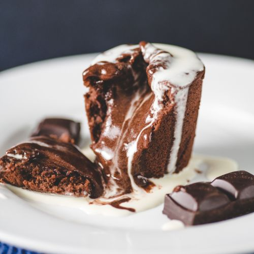

Chocolate pudding

Description:
Savour this decadent chocolate pudding, guaranteed to leave your taste buds wanting more!
Ingredients:
- melted butter, to grease
- 150g (1 cup) self-raising flour
- 100g (½ cup) castor sugar
- 2 tablespoons cocoa powder
- 125ml (½ cup) milk
- 50g butter, melted
- 1 egg, lightly whisked
- thickened cream, to serve
Chocolate sauce:
- 155g (¾ cup, firmly packed) brown sugar
- 2 tablespoons cocoa powder
- 375ml (1 ½ cups) boiling water
Steps:
- Preheat oven to 180°C. Brush a 1.5L (6-cup) capacity ovenproof dish with melted butter to lightly grease.
- Combine the flour, sugar and cocoa powder in a medium bowl. Make a well in the centre. Combine the milk, butter and egg in a large jug. Gradually pour the egg mixture into the flour mixture and stir until well combined. Pour into the prepared dish and use the back of a spoon to smooth the surface.
- To make the chocolate sauce, sift the sugar and cocoa powder into a bowl. Sprinkle over the pudding mixture in the dish. Gently pour the boiling water over the cocoa mixture.
- Bake in oven for 40-45 minutes or until a cake-like top forms and a skewer inserted halfway into the centre comes out clean. Set aside for 5 minutes to cool slightly. Serve with thickened cream, if desired.
- Enjoy!
Return to home